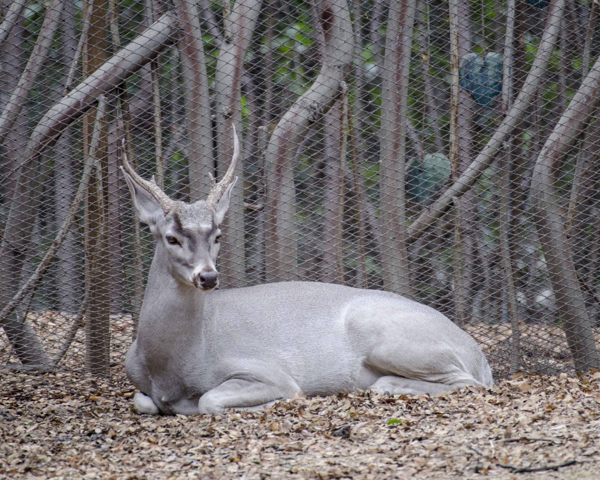

¡Bienvenidos al
Parque Histórico de Guayaquil!
Te invitamos a conocer sobre el Guayaquil de Antaño
Podrás disfrutar del avistamiento de animales del Ecuador entre los que se destacan el Mapache y el Venado. También contamos con flora del Ecuador con un puente que cruza a través de un ecosistema de Manglar natural. Ver más del zoológico.
Reservas Quiero donarFauna del Ecuador
El Mapache es una especie poco avistada dentro de la ciudad pero en los ecosistemas más alejados se pueden observar de forma silvestre

Antinguamente en Guayaquil se encontraban en abundancia los venados en las periferias, pero hoy en día se han alejado a zonas como el Bosque Prosperina
Ven cuando puedas haciendo la reserva directamente desde nuestro sitio web.